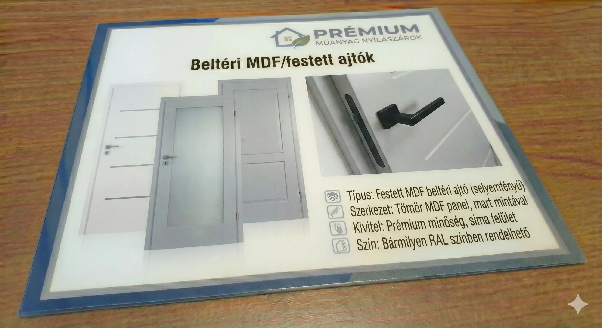

Egyedi stílus és tökéletes formatartás
A hagyományos, festett nyílászárók kedvelőinek gyakran okoz bosszúságot a valódi fából készített ajtók vetemedése. A festett MDF ajtók hatékony, és kedvező árú megoldást jelentenek erre a problémára.
Az MDF kiválóan megmunkálható, alaktartó anyag, amely nem érzékeny a páratartalom változására. Az ajtó plasztikus mintázatát precíziós CNC marással alakítjuk ki, a végleges, gyönyörű felületet pedig minőségi porszórt fedőfesték alkalmazásával érjük el.
A RAL skála bármely színében rendelhető, felár ellenében akár magasfényű kivitelben is.
Jelentősen kedvezőbb árú megoldás a festett tömörfa nyílászárókhoz képest, azonos esztétikai élmény mellett.
A CNC technológiának köszönhetően a mintázat akár egyedi elképzelések alapján is kivitelezhető.
Rendkívül hatásos, gyönyörű porszórt felület, amely minden modern otthon dísze lehet.
Töltse le aktuális termékplakátunkat, ahol számos modell közül választhat:
Modellek megtekintése (PDF)
Minden MDF ajtónk a legmodernebb CNC gépeken készül, biztosítva a milliméter pontos illeszkedést és a tökéletes felületi minőséget.
Kérjen egyedi ajánlatot festett MDF beltéri ajtóinkra, bármilyen RAL színben!
Ajánlatkérés Küldése